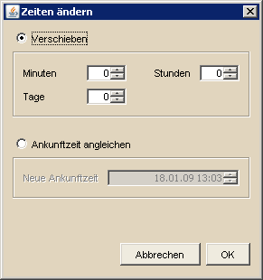

Angriffszeiten verändern |
|
|  | |
| DS Workbench bietet die Möglichkeit, markierte Angriffe in der Angriffsübersicht zeitlich zu verschieben bzw. die Ankunftszeit auf einen gemeinsamen Zeitpunkt festzulegen. Das Verschieben funktioniert sowohl in Richtung Zukunft als auch in die Vergangenheit für Tage, Stunden und Minuten. Das festlegen einer gemeinsamen Ankunftszeit geschieht auf ein einheitliches Datum, zu dem dann alle markierten Angriffe ihr Ziel erreichen sollen. Die notwendigen Abschickzeiten werden bei Änderung der Zeiten automatisch angepaßt. Dennoch ist es ratsam, nach einer Veränderung zu überprüfen, ob alle Angriffe noch abgeschickt werden können. |